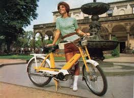

Motor: kétütemű,egyhengeres,léghűtésű
Lökettérfogat: 49ccm
Furat x löket: 39 x 41cm
Kompresszióarány: 1:7,5
Teljesítmény: 1,32KW(1,8 SAE LE)4500 fordulat/perc
Tengelykapcsoló: autómatikus,röpsúlyos,száraz súrlódókapcsoló
Sebességváltó: egyfokozatú
Motor indítása: pedálokkal
Első és hátsó villa rugóstagjai: spirálrugós lengéscsillapítás nélkül
Rugóút elöl/hátul: 60mm
Első és hátsófékek: 85x20mm-esdobfék

Jármű tömege: 44 kg
Teherbírás: 90 kg
Tartós sebesség: 35 km/h
Legnagyobb sebesség: 40 km/h
Fogyasztás: 1,7 liter/ 100 km 27 km/h sebességnél
Üzemanyag tartály űrtartalma: 3 liter 0,5 liter tartalék
Motor zajszintje: 73 dB.